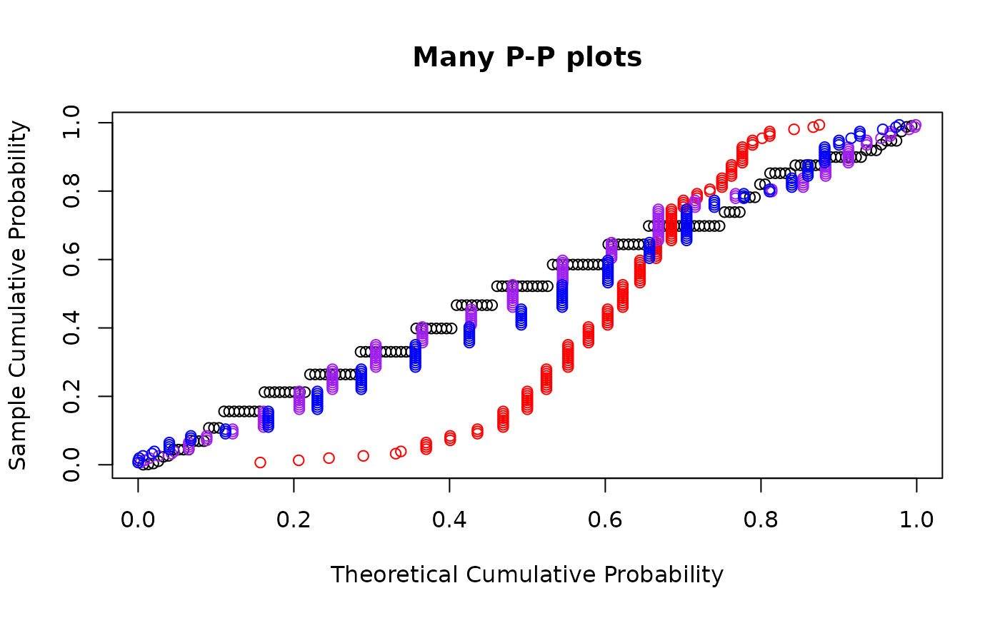

Probability Plots Using Maximum Likelihood Estimates
Source:R/probability_plots.R
ProbabilityPlots.RdMake quantile-quantile plots and probability-probability plots using maximum likelihood estimation.
Usage
ppmlplot(y, obj, plot.it = TRUE, datax = FALSE, ...)
ppmlline(...)
ppmlpoints(y, obj, plot.it = TRUE, datax = TRUE, ...)
qqmlplot(y, obj, plot.it = TRUE, datax = FALSE, ...)
qqmlline(y, obj, datax = FALSE, probs = c(0.25, 0.75), qtype = 7, ...)
qqmlpoints(y, obj, plot.it = TRUE, datax = TRUE, ...)Arguments
- y
Numeric vector; The data to plot on the
yaxis whendataxisFALSE.- obj
Either an
univariateMLobject or a function that returns aunivariateMLobject when called withyas its only argument.- plot.it
Logical; should the result be plotted?
- datax
Logical; should
ybe plotted on thex-axis? Defaults toFALSEinqqmlplotandppmlplotbutTRUEinqqmlpointsandppmlpoints.- ...
Graphical parameters.
- probs
Numeric vector of length two, representing probabilities. Corresponding quantile pairs define the line drawn.
- qtype
The
typeof quantile computation used inquantile.
Value
For qqmlplot, qqmlpoints, ppmlplot, and
ppmlpoints, a list with components x (plotted on the x axis)
and y (plotted on the y axis). qqmlline and ppmlline
returns nothing.
Details
qqmlplot produces a quantile-quantile plot (Q-Q plot) of the values in
y with respect to the distribution defined by obj, which is
either a univariateML object or a function returning a
univariateML object when called with y. qqmlline adds a
line to a <U+201C>theoretical<U+201D>, quantile-quantile plot which passes through
the probs quantiles, by default the first and third quartiles.
qqmlpointsbehaves like stats::points and adds a Q-Q plot to
an existing plot.
ppmlplot, ppmlline, and ppmlpoints produce
probability-probability plots (or P-P plots). They behave similarly to the
quantile-quantile plot functions.
This function is modeled after qqnorm.
Quantile-quantile plots and probability-probability plots are only supported for continuous distributions.
Graphical parameters may be given as arguments to all the functions below.
References
M. B. Wilk, R. Gnadadesikan, Probability plotting methods for the analysis for the analysis of data, Biometrika, Volume 55, Issue 1, March 1968, Pages 1<U+2013>17, https://doi.org/10.1093/biomet/55.1.1
Examples
## Make a single probability plot with a line.
obj <- mlgamma(Nile)
qqmlplot(Nile, obj)
qqmlline(Nile, obj)
## Make multiple probability plots. datax = TRUE must be used to make this
## look good.
ppmlplot(airquality$Wind, mlgamma, main = "Many P-P plots")
ppmlpoints(airquality$Wind, mlexp, col = "red")
ppmlpoints(airquality$Wind, mlweibull, col = "purple")
ppmlpoints(airquality$Wind, mllnorm, col = "blue")
